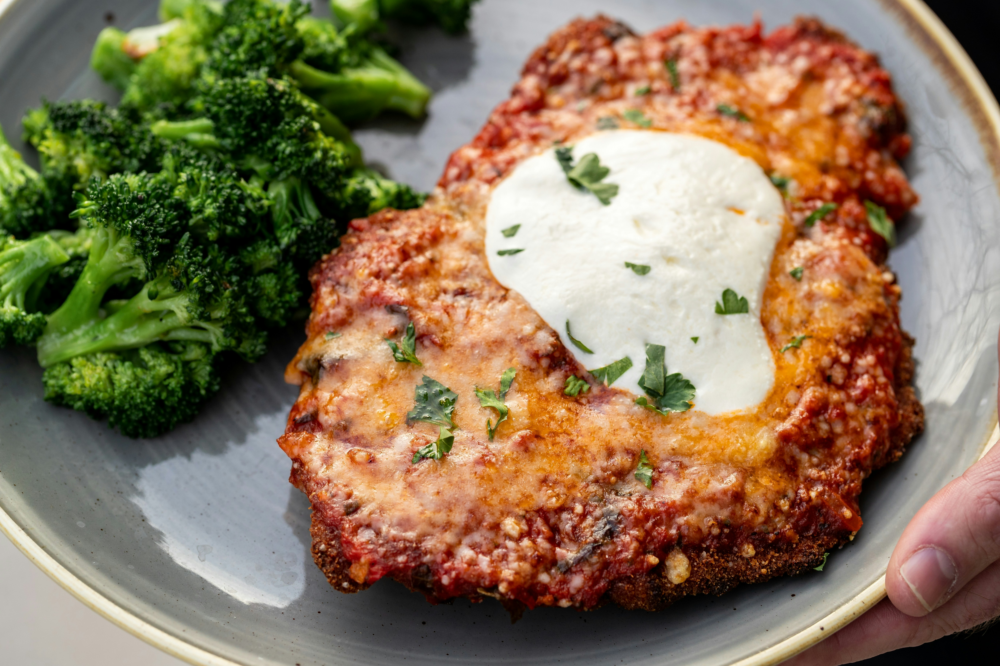

Home
Chicken Parm

Description
Recipe taken from Spend With Pennies, all credit goes to them.
This chicken parmesan recipe is a restaurant favorite that’s easy to make at home. Serve it over pasta or with roasted zucchini for a great weeknight meal.
Ingredients
- 4 boneless skinless chicken breasts about 5oz each
- ½ cup all-purpose flour
- 2 large eggs
- ⅔ cup Panko bread crumbs
- ⅔ cup seasoned bread crumbs
- ⅓ cup grated Parmesan cheese
- 2 tablespoons chopped fresh parsley
- 1 teaspoon salt divided
- ½ teaspoon black pepper divided
- 4 tablespoons olive oil or as needed
- 24 ounces marinara sauce homemade or jarred
- 1 cup shredded mozzarella cheese
- ¼ cup shredded Parmesan cheese
- 2 teaspoons chopped fresh basil for garnish
- 1 teaspoon chopped fresh parsley for garnish
Steps
- Preheat the oven to 425°F.
- Place the flour in a shallow bowl or dish. Place the eggs in a second shallow dish and beat with a fork.
- In a third shallow dish, combine Panko breadcrumbs, seasoned breadcrumbs, grated Parmesan cheese, 2 tablespoons chopped parsley, ½ teaspoon salt, and ¼ teaspoon pepper.
- Using the flat side of a meat mallet, pound the chicken breasts to ½-inch thickness. After pounding, if they're very large, you can cut them in half. Pat the chicken dry with paper towels and season with ½ teaspoon salt and ¼ teaspoon black pepper.
- Dip both sides of the chicken into the flour and shake to remove any excess. Dip chicken in beaten eggs, then into the breadcrumb mixture and gently press to adhere.
- Preheat the oil over medium-high heat in a large skillet. Brown the chicken for about 2 minutes per side or until golden, it does not need to cook through.
- In the bottom of a 9×13 baking dish, add 1 ½ cups of marinara sauce. Add the browned chicken. Top each piece of chicken with 2 tablespoons of marinara sauce in the center. Top with mozzarella and shredded parmesan.
- Bake for 20-25 minutes or until golden and bubbly and the chicken reaches an internal temperature of 165°F with an instant-read thermometer.
- Sprinkle with fresh basil and parsley and serve over pasta.